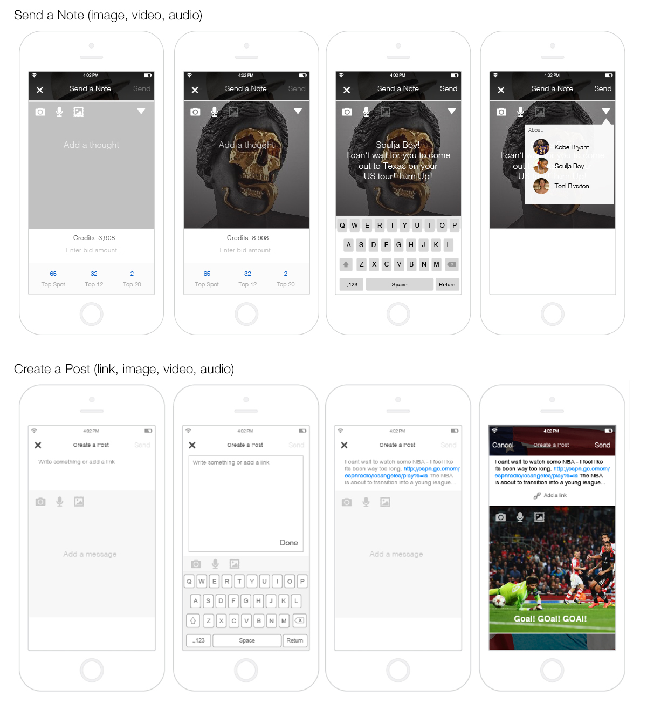

UX Designer
Santa Monica, CA - Present
We started AppOne with a tight-knit crew, building out a native app that aggregates social media like Instagram, Twitter, Pinterest, Blogs, and Youtube Channels. We also built in the option to purchase custom iTunes playlists, concert tickets via Seat Geek and pull in relevant news via Bing.
I took what was uniquely cool about every app experience and tried to keep it consistent, all while making it very much our own experience. Things like keeping the images and videos at full width and height without compressing resolution. I wanted to stay out of the way so users could enjoy the convenience of having everything in one place.
We incorporated messaging for users to reach out to one another independently, as well as Artist specific group chats. Adding the ability to share links was a good tool to push existing/upcoming promotions and extend a marketing reach to users.
Working as a team together and remotely has enhanced my experience with Git to push/pull the latest code. Building natively had also pushed my development skills past HTML and into Objective C.
UX Process
Most of my process stems from sketches, both in my books or around the office whiteboards. It really helps to flesh out thoughts and feedback, as well as provides visuals to keep everyone on the same page. Helps those long meetings go a bit faster too.
Page Views
All the individual cells had specific elements that were displayed in a way we all liked, so we made sure to keep that consistent. The challenge was trying to display them all in a united, app specific way. Youtube, Instagram, and Twitter all have videos, but also display images, sometimes at different sizes, so we had to make sure we took things like that into account. Pinterest is a good example of that.
